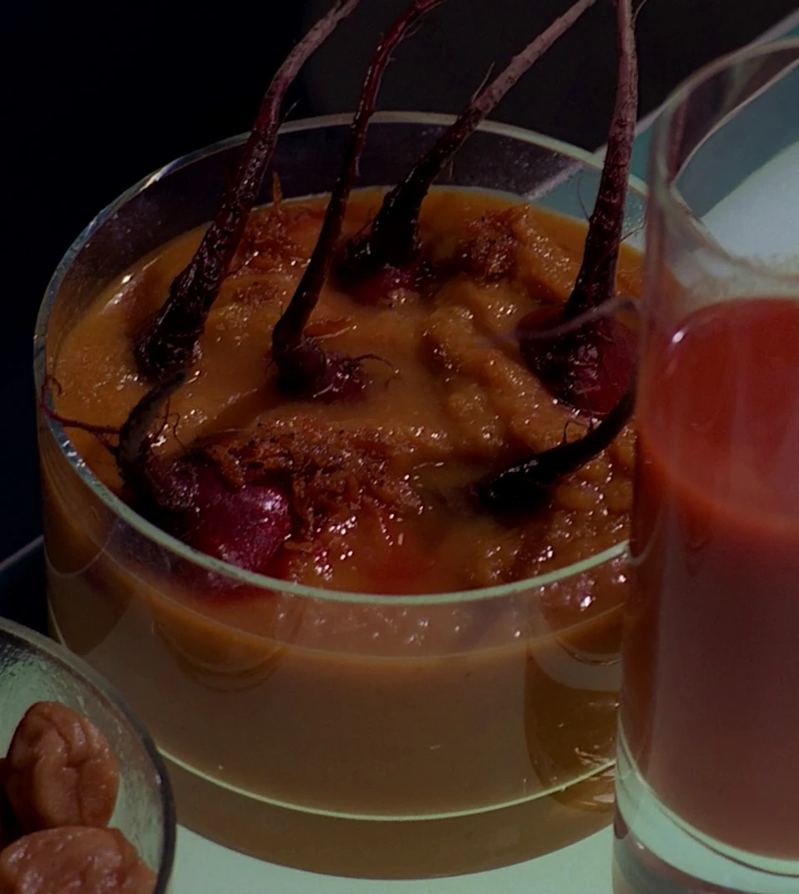

How to Prepare Rokeg Blood Pie

Description
Welcome to the fierce and flavorful world of Klingon cuisine!
Today, we present to you a legendary dish that is not for the faint of heart: Rokeg Blood Pie. This traditional Klingon delicacy is a celebration of strength and vitality, with its bold flavors and striking appearance. Made with a combination of robust ingredients sourced from the far reaches of the Klingon Empire, this dish is guaranteed to awaken your taste buds and ignite your warrior spirit.
So, gather your culinary courage and embark on a gastronomic adventure unlike any other.
Ingredients
- 2 cups grak-ma flour (Klingon flour)
- 1/2 teaspoon borta salt (from the sulfur springs of Qo'noS)
- 1/2 cup cold bloodwine (to honor the mighty warriors)
- 1 pound fresh torgut liver, finely chopped (harvested from the fierce Torgut beasts)
- 1 pound ground gik'tal meat (from the powerful Gik'tal creatures)
- 1 large onion, finely chopped (preferably from the Shadowlands of Boreth)
- 2 cloves garlic, minced (sourced from the caves of No'Mat)
- 2 tablespoons gagh (dried serpent worms, obtained from the forests of Fek'Ihri)
- 1 tablespoon qagh (dried Klingon bloodworms, procured from the sacred rivers of Sto-Vo-Kor)
- 1 teaspoon qelI'qam (Klingon red pepper flakes, harvested from the volcanic mountains of Gre'thor)
- 1/2 teaspoon loDHom (Klingon black pepper, ground from the ashes of fallen enemies)
- 1/4 teaspoon Sa'qeq (Klingon salt, extracted from the treacherous oceans of Rura Penthe)
- 2 tablespoons melted targ fat (for a rich and savory touch)
Steps
- Prepare yourself for the culinary battle by preheating your oven to 375°F (190°C).
- In a large mixing bowl, combine the grak-ma flour and borta salt. Gradually add the cold bloodwine while stirring, until the dough forms a ball. Knead the dough for a few minutes until smooth. Set it aside to rest.
- In a skillet over medium heat, cook the finely chopped torgut liver, ground gik'tal meat, onion, and garlic until the meat is browned and the onion is translucent. Drain any excess fat.
- Add the gagh, qagh, qelI'qam, loDHom, and Sa'qeq to the skillet. Stir well to combine the intense flavors. Cook for an additional 5 minutes, allowing the spices to infuse into the meat mixture. Remove from heat and set aside.
- Take the dough and divide it into two equal portions. Roll out one portion to fit the bottom of a 9-inch pie dish. Press it firmly into the dish, ensuring it covers the entire bottom.
- Spoon the meat mixture onto the dough in the pie dish, spreading it evenly.
- Roll out the second portion of dough to create a pie crust for the top. Carefully place it over the meat mixture, sealing the edges with your fingertips.
- Brush the melted targ fat over the top crust to enhance the flavors and add a touch of richness.
- Bake the Rokeg Blood Pie in the preheated oven for 40-45 minutes, or until the crust is golden brown and crispy.
- Remove the pie from the oven and let it cool for a few minutes before serving. Cut into hearty slices and savor the fearsome and flavorful delight
Closing
Note: Klingon cuisine is known for its bold and intense flavors. Adjust the spice levels according to your personal preference and tolerance. Qapla'! (Success!)